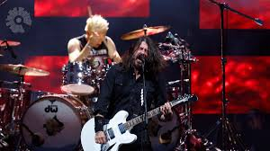
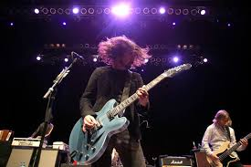
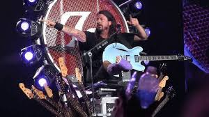

After the death of Kurt Cobain, Grohl went on to form the band the Foo Fighters. He continued to make more music after this but didn't want to seem like he was starting a solo career. So he recruited other musicians he had worked with to record the first album of the Foo Fighters.

Grohl began working on many other albums and even went back to the drums in the end production of their second album. The late and great Taylor Hawkins and former Scream bandmate Franz Stahl joined the band.

Home
Grohl then went on to make many more albums and he is still making more to this day. He and his band are even touring the United States in the summer of 2024. This band has been one of his most successful and is still on going.